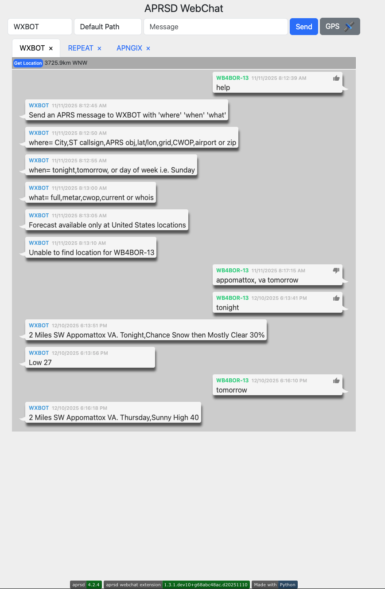

APRSD Webchat


{kind=link}

Features
This is the webchat extension for APRSD. This was removed from APRSD proper to help those installs that don't want/need the webchat capability and all of it's requirements.
Requirements
aprsd >= 3.5.0
Installation
You can install APRSD Webchat via pip from PyPI:
$ pip install aprsd-webchat-extension
Or using uv:
$ uv pip install aprsd-webchat-extension
Configuration
Before running the webchat extension, you need to configure APRSD. The webchat extension uses the same configuration file as APRSD. Generate a sample configuration file if you haven’t already:
$ aprsd sample-config
This will create a configuration file at ~/.config/aprsd/aprsd.conf (or aprsd.yml).
Required Configuration
The webchat extension requires the following basic APRSD configuration:
Callsign: Your amateur radio callsign
APRS-IS Network: Connection to APRS-IS servers
APRS Passcode: Your APRS passcode (generate with
aprsd passcode YOURCALL)
Webchat-Specific Configuration
Add the following section to your APRSD configuration file to customize the webchat interface:
[aprsd_webchat_extension]
# IP address to listen on (default: 0.0.0.0 - all interfaces)
web_ip = 0.0.0.0
# Port to listen on (default: 8001)
web_port = 8001
# Latitude for GPS beacon button (optional)
# If not set, the GPS beacon button will be disabled
latitude = 37.7749
# Longitude for GPS beacon button (optional)
# If not set, the GPS beacon button will be disabled
longitude = -122.4194
# Beacon interval in seconds (default: 1800 = 30 minutes)
beacon_interval = 1800
# Disable URL request logging (default: False)
disable_url_request_logging = False
Authentication
The webchat interface uses HTTP Basic Authentication. You’ll need to set up authentication credentials. The username and password are typically configured through your web server or reverse proxy (if using one), or you can set them in your APRSD configuration.
Usage
After installation and configuration, you can start the webchat server:
$ aprsd webchat
The webchat interface will be available at http://localhost:8001 (or the IP/port you configured).
Command-Line Options
$ aprsd webchat --help
Available options:
-p, --port PORT: Override the web port from configuration-f, --flush: Flush out all old aged messages on disk--loglevel LEVEL: Set logging level (DEBUG, INFO, WARNING, ERROR)--config-file FILE: Specify a different configuration file--quiet: Disable console logging output
Example: Running with Custom Port
$ aprsd webchat --port 9000 --loglevel INFO
This will start the webchat server on port 9000 instead of the default 8001.
Accessing the Web Interface
Once the server is running:
Open your web browser
Navigate to
http://your-server-ip:8001(or your configured port)Enter your authentication credentials when prompted
You’ll see the APRSD WebChat interface
WebChat Features
Send Messages: Send APRS messages to other stations
Receive Messages: View incoming APRS messages in real-time
Message Status: Track sent messages and their acknowledgments
GPS Beacon: Send GPS beacons (if latitude/longitude are configured)
Station Locations: View locations of stations you’re communicating with
Real-time Updates: Uses WebSockets for real-time message updates
Integration with aprsd-gps-extension
If you have aprsd-gps-extension installed and enabled, the webchat interface will
automatically use GPS data from that extension instead of the static latitude/longitude
configuration. This enables dynamic GPS beaconing based on actual GPS coordinates.
Contributing
Contributions are very welcome. To learn more, see the Contributor Guide.
License
Distributed under the terms of the Apache Software License 2.0 license, APRSD Webchat is free and open source software.
Issues
If you encounter any problems, please file an issue along with a detailed description.
Credits
This project was generated from @hemna's APRSD Extension Python Cookiecutter template.
Activity